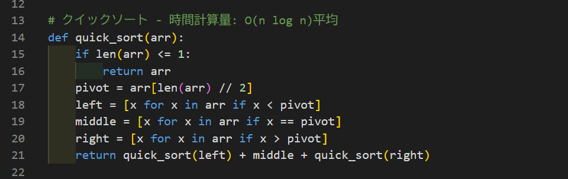
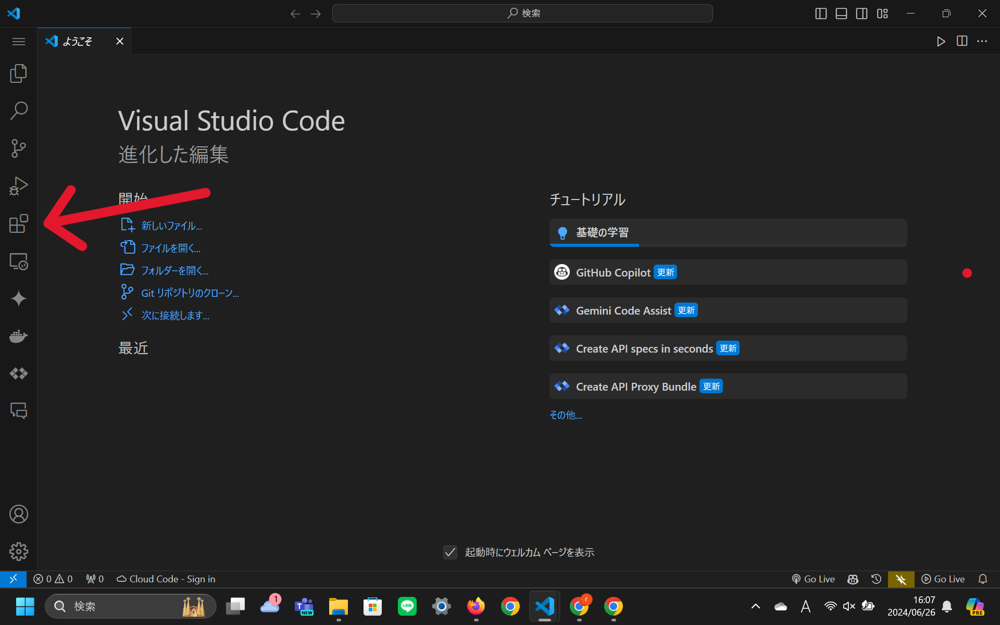
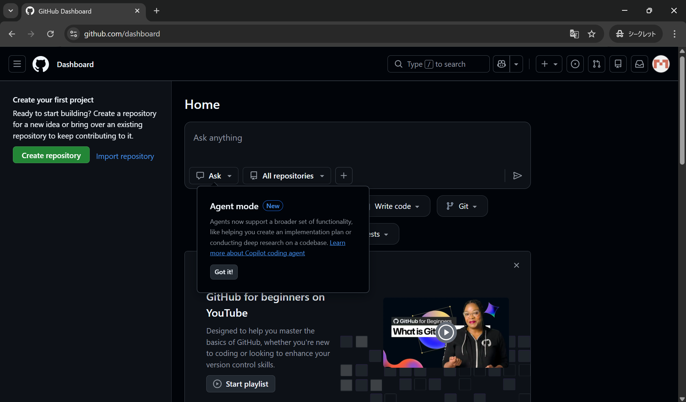

1 本日の内容
今回はプログラミングをする前の環境構築と呼ばれる作業を行います。『プログラミングをする』と聞くと、『プログラムを書く』ことをイメージする人が多いと思います。しかし、『プログラミングをする』という言葉には大きく分けて 『コードを書く』『コードを動かす』『コードを確認する』の3つのステップがあります。環境構築とはこれらの作業を行うために必要なソフトや設定を準備することです。これらを整えることで、はじめて自分のパソコンでプログラムを動かせるようになります。
2 Visual Studio Codeのインストール
2.1 Visual Studio Codeとは
Visual Studio Code（以下:VS Code）は、プログラムを書くためのソフトで、コードエディタと呼ばれるツールです。皆様がイメージするような以下の画面、この編集画面がVS Codeの特徴的な画面です。

もっと具体的な説明をすると、書いたコードを見やすく色分けして表示したり、入力途中のコードを自動で補完したり、間違いがある箇所を教えてくれる機能があります。また、プログラムの動作確認や問題の特定（デバッグ）を助ける機能も用意されており、初心者から実務レベルまで幅広く利用されています。さらにVS Codeの大きな特徴として、拡張機能を追加することで、自分の目的に合わせて機能を拡張できる点があります。たとえば、特定のプログラミング言語に対応した補助機能を追加したり、作業を効率化するツールを組み込んだりすることが可能です。この柔軟性の高さが、多くの開発者に利用されている理由の一つです。
ただし、VS Codeはあくまで「コードを書くためのツール」であり、それ単体でプログラムを動かすことはできません。たとえばPythonのプログラムを実行するためにはPython本体が必要であり、VS Codeはその作業を補助する役割を担います。そして、似たような機能を持つコードエディタはほかにもあります。普段から愛用しているものや使いたいコードエディタがある人はそれを利用してください。この資料の中ではVS Codeをインストールしている前提で話を進めていきます。
2.2 Visual Studio Codeのインストール手順
- ここから先の手順は執筆当時（2026年春）のものであり、今後更新されていく可能性があります。作業を進めていて、うまくいかないところや説明と違う内容が表示される場合は自分で検索をするか、部長や先輩に相談しましょう。
- ここから先はWindowsの学校指定のスペックPCを買っている人向けの内容です。異なる場合は各自の機種に合わせたインストール方法を調べてください。
- まずは公式のダウンロードページにアクセスし、左側にあるWindowsの窓マークの下の Windowsと書かれた青いボタンをクリックします。
-
次にダウンロード先を聞かれるので、適当な場所を選んで、
.exeファイルをダウンロードします。ダウンロードが完了したら、ファイルをダブルクリックして実行を押します。 - インスト―ラーが起動すると思います。基本的には、すべての項目をデフォルトのまま進めていけば問題ありません。インストール先も変更したい人は変更してもいいですが、特に理由がない限りはデフォルトのままで大丈夫です。ただし《追加タスクの選択》は、ほぼすべての項目にチェックを入れておくことを強くお勧めします。これらの項目に関してはまだ内容は理解しなくても構いませんが、インストール後に再設定するのが面倒です。全てにチェックを入れましょう。
-
すべての手順を終え、下記の画面が開けると成功です。赤い矢印で示す四角いアイコンクリックしてください。

- 初期設定では英語が選択されているため、日本語に設定します。検索バーが表示されると思うので、ms-ceintl.vscode-language-pack-jaと検索してください。
- 検索結果の中にMicrosoftが提供する、Japanese Language Pack for Visual Studio Codeという名前の拡張機能が表示されると思うのでそれをクリックしてください。
- 地球儀のマークのページが表示されたらinstallをクリックし、完了したら何もせずにアプリを閉じて、もう一度アプリを開きます。
- 画面右下にChange Language and Restartという案内が出てくるので、それをクリックしてからアプリをもう一度再起動すると日本語で表示されるようになります。
2.3 拡張機能のインストール
前章の手順4～8でVS Codeを日本語にしてもらったと思いますが、実はあれもVS Codeの拡張機能の一つです。このようにVS Codeの拡張機能とはVS Codeをより良く自分が使いやすくするためのオプションなので、気軽にインストールして使用してください。私なりにおすすめの拡張機能とその効果を書いておきます。皆様も自分の目的に合わせて、必要な拡張機能をインストールしてみてください。手順は先ほどの手順4～8と同様で、拡張機能の名前を検索してインストールしてください。
-
oderwat.indent-rainbow
プログラミングコードは見やすくするために、文章と同じように改行を入れながら記述していきます。その際に段落ができるのですが、段落の深さに応じて色を変えてくれる拡張機能です。コードが複雑になっても、どこからどこまでが同じ段落なのかがわかりやすくなります。 -
pkief.material-icon-theme
VS Codeのファイルやフォルダにアイコンを追加する拡張機能です。ファイルの種類によって異なるアイコンが表示されるため、視覚的にファイルを識別しやすくなります。一つのプロジェクトフォルダに様々な言語のファイルを作成するときに見分けがつきやすいです。 -
streetsidesoftware.code-spell-checker
プログラミングでは変数や関数などの名前を決めるときに英語の単語を使うことが多いのですが、その際にスペルミスしていると、コードが正しく動かないことがあります。この拡張機能はスペルミスを検出して、スペルミスしている単語を赤い波線で表示してくれます。スペルミスを見つけやすくなります。 -
mosapride.zenkaku
プログラミングにおいて全角でコードを書くことは致命傷になります。この拡張機能は全角の文字に背景色を付けてくれます。_やスペースなど全角か半角かを判別できずにエラーが出るなどということを防ぐことができます。 -
formulahendry.auto-rename-tag
HTMLやXMLで文を書く際に、カギかっこのような役割をするタグと呼ばれるもので文を囲うのですが、先頭のタグを変えると後半のタグも自動で対応する形に変更してくれる拡張機能です。
2.4 フォントの変更
これは別に変更しなくても使えますが、視認性向上の観点からお勧めします。
- VS Codeの画面右下にある歯車マークをクリックして設定を開きます。
- 検索バーに
editor.fontFamilyと入力して'Source Han Code JP',Consolas, 'Courier New', monospaceをボックスに入力します。
3 GitとGit Hubの設定
3.1 Git Git Hubについて
Gitとは、プログラムの変更履歴を管理するためのツール で、GitHubはそのGitを利用したオンラインのサービスです。これらを使用することで、コードの変更履歴を追跡し、複数人での共同作業が容易になります。とはいってもなかなか理解するのが難しい概念となっていますので、使いながら勉強するのが一番おすすめです。気になる人はGit とはなどで検索してみてください。おいおいこのテキストでも説明していきます。
3.2 Gitのインストール
Gitの公式サイトにアクセスしてInstallから各自のOSに合わせたインストーラをダウンロードしてください。ダウンロードしたらVS Codeの時と同様にインストーラを実行して設定を進めていってください。これに関してはバージョンによって手順が大きく変わってくるため、詳しく説明はしませんがGit インストール やり方 最新 初心者向けなどで検索をしてみてください。わからなかったりうまくいかないところがあれば、部長や先輩に相談してみてください。3年生以降の部員であればこの範囲は理解しているはずなので、質問すれば教えてくれると思います。
一応私が参考にしたサイトも載せておきます。Gitのインストール方法(Windows版)
3.3 Git Hubアカウントの作成
次にGit Hubアカウントの作成を行います。GitHubのアカウントは就職活動でも利用するので、アカウント名や使い方には注意してください。というのも、Git Hubはコードを公開・共有するためのサービスなので、よくIT系の就活ではGit Hubのアカウントを確認して製作履歴などを見られることがあります。アカウント名は本名でなくてもいいですが、就活の際に不利にならないような名前にしておくことをおすすめします。また、コードの公開範囲なども設定できるので、就活の際に見られても問題ないようなコードだけを公開するようにしましょう。
※普通に使っていれば問題ありません。そんなに気にしなくていいです。
※これから行う設定はページを翻訳せずに行ってください。最初は慣れないかもしれませんが、英語で作業することになれましょう。
アカウント作成手順
- Git Hubの公式サイトにアクセスします。
- メールアドレス・パスワードを入力します。この時登録するメールアドレスは学校のもの以外にしましょう。
- ユーザーネームを入力します。これはGitHub上で使用する名前で本名である必要はありませんが、就活のときも見られます。英数字とハイフンが使えます。
- 自身の国（Japan）を選択しcreate accountを選択します。Email preferencesはメルマガです。任意で選択して下さい。
- 認証画面が表示されるので認証を完了させてください。
- この画面になればアカウントの作成は完了です。先ほど設定したユーザー名は部長に伝えてください。クラブのGitHub organization（Git Hub内のグループのようなもの）に招待します。

3.4 GitとGitHubの連携
次に先程インストールしたGitとGitHubを連携させていきます。
- 画面一番下のタスクバーにある、Windowsのアイコンを右クリックしターミナル（管理者）を選択します。＋マークの横のから、コマンドプロンプトを選択します。
git config --system -lと入力し、エンターキーを押してください。core.autocrlf=inputの部分が違う場合（core.autocrlf=trueなど）はgit config --system core.autocrlf inputと入力しエンターキーを押して設定を変更してください。git config --global user.name "ユーザー名"を入力し、エンターキーを押してください。（ユーザー名は自分のGit Hubのユーザー名です）git config --global user.email "メールアドレス"を入力し、エンターキーを押してください。メール設定画面 にアクセスして「Keep my email addresses private」と「Block command line pushes that expose my email」の項目 (ページの下部) にチェックを入れて、コミット用のメールアドレス (...@users.noreply.github.com) これを入力してください。git config --global core.quotepath falseを入力し再度エンターキーを押してください。設定内容が出力されるので、できているかを確認してください。
演習
これまでの内容を踏まえて、Pythonとよばれるプログラミング言語の実行環境を自分でやり方を調べて入れてみましょう。なにをしたらいいかわからない場合は下記のリンクを参考にするか、部長や先輩などに聞いてみてください。コードはまだ勉強していないので実行しなくても大丈夫です。何度も言いますが『とても』難しい内容なので、わからないことや詰まった時は遠慮なく先輩や部長、顧問の先生に相談してください。インストールできているかどうかは、python -Vをコマンドプロンプトに入力して、Pythonのバージョンが表示されれば成功です。それ以外が出てきた場合は何らかの設定で失敗しているので、再度手順を確認するか、設定を見直してください。
もしPythonについて早く学びたいであったり、やった感じがしない、正しくできているかわからないという人は3章 プログラミング入門でPythonを少しだけ触っているので、そちらを読んでみてください。
次回の部活までにしてきてほしいこと
次回の資料からはいよいよプログラムを書いて動かしてもらいます。そこで、VS Codeとは何かについて改めて自分で調べて知識を増やし、また拡張機能について調べてお好みでカスタマイズしてみてください。今日インストールしてもらったPython向けの拡張機能についても調べてください。またGitHubの使い方についても調べておいてください。